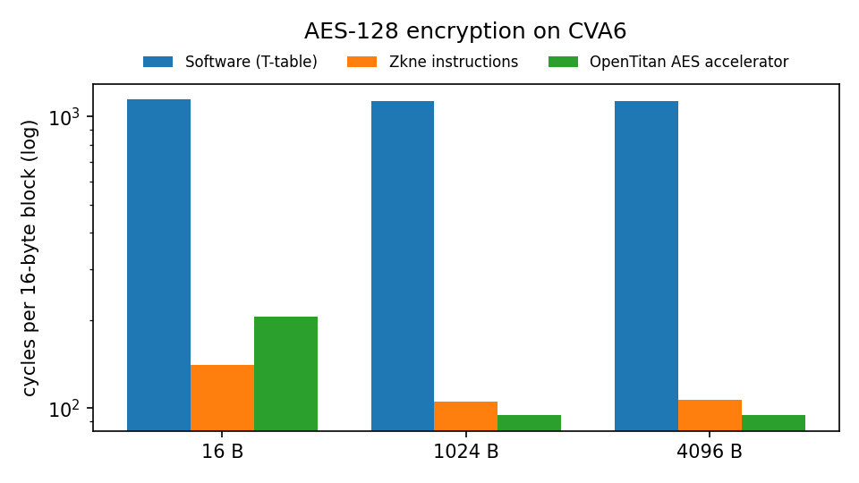
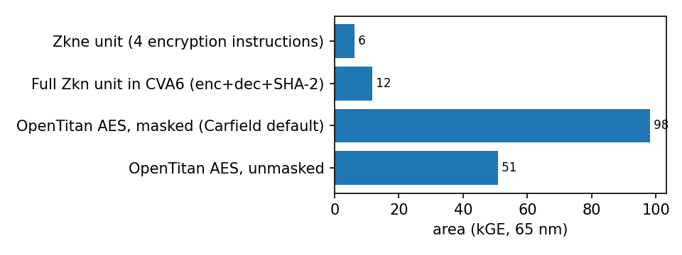

AES-128 on a RISC-V CPU: Zkne instructions vs a security accelerator
Honours project, first results · CVA6 (RTL, VCS) and TSMC 65 nm LP synthesis (Genus) · November 2026
Result in one line. On the same CVA6 core, the RISC-V scalar crypto instructions (Zkne)
encrypt about as fast as OpenTitan's AES accelerator (107 vs 95 cycles per 16-byte block, both
about 11× faster than software), with about 20× less hardware (4.9 vs 98 kGE). The
accelerator's advantages are elsewhere: it is masked against power analysis and leaves the CPU free.
1. Question
A RISC-V SoC can speed up AES in two ways:
Inside the CPU (ISE): the Zkne extension adds instructions such as aes64esm, each
doing one AES round step on half the state in one cycle. The CPU runs the cipher itself.
Next to the CPU (accelerator): a separate AES block on the bus. The CPU writes the key and
data into its registers, waits, and reads the result. Carfield's OpenTitan security island has one.
How do the two compare in speed and area, measured on the same processor and the same
technology? Plain software AES is included as the baseline.
2. Setup
Figure 1. All three methods run on one CVA6 in RTL simulation. The OpenTitan AES block is
attached to CVA6's bus, so a real CPU drives it with real loads and stores.
CPU: upstream CVA6 (RV64GC, Zkn enabled). Carfield's own CVA6 (2023) predates Zkn, so CVA6 runs
standalone in its test harness, simulated in Synopsys VCS.
Accelerator: OpenTitan's AES IP from Carfield's dependencies, with its default settings
(first-order masking, DOM S-box), placed on CVA6's peripheral bus through the harness's own AXI-to-APB
bridge and a small APB-to-TL-UL adapter.
Software: one bare-metal C program with three implementations: T-table AES (what libraries do
without AES instructions), Zkne (aes64ks1i/ks2/esm/es), and a driver for the accelerator that
overlaps blocks as OpenTitan's programming guide recommends.
Correctness: all three produce the FIPS-197 C.1 ciphertext 69c4e0d8…c55a and
identical output for a 4 KB buffer, in RTL simulation. Spike gives the same instruction counts as CVA6.
CVA6 cycles (mcycle), RTL simulation. Cycles / block from the 4 KB run.

Figure 2. Cycles per 16-byte block (log scale). The accelerator is slowest for a single block
(bus round trips and status polling) and slightly fastest for large buffers, where it overlaps blocks.
Zkne and the accelerator are close. The accelerator computes the rounds in dedicated logic, but
each block also costs 8 bus accesses plus status polling. Those round trips use up most of its advantage.
For one block, Zkne wins (141 vs 206 cycles): no bus trips and no status polling.
The CPU is busy with Zkne but mostly waiting with the accelerator (about 97 vs 24 instructions per
block). With the accelerator, CVA6 could do other work in parallel, though this test does not use that.
4. Area
Block
Area (µm²)
kGE
Logic only (kGE)
Meets 2 ns?
Zkne unit (only the 4 encryption instructions)
8,785
6.1
4.9
yes
Full Zkn unit as in CVA6 (adds decryption and SHA-2)
16,751
11.6
10.4
yes
OpenTitan AES, masked (Carfield default)
141,457
98.2
59.6
yes
OpenTitan AES, unmasked
73,111
50.8
38.1
no, misses by 0.71 ns (about 370 MHz)
"Logic only" leaves out flip-flops. For Zkne/Zkn these are only the wrapper registers that stand in
for CVA6's existing pipeline registers, so 4.9 kGE is what Zkne adds to the CPU. For OpenTitan the flip-flops
(key, state, data and control registers) are part of its real cost, so the full 98.2 kGE counts.

Figure 3. Area at 65 nm, 2 ns target (the unmasked OpenTitan AES misses this target by 0.71 ns).
Zkne is about 20× smaller than the accelerator (4.9 vs 98.2 kGE), because it reuses the
CPU's registers, control and memory path, and only adds the S-box and MixColumns logic.
About half of the accelerator is masking. Without masking, OpenTitan AES is 50.8 kGE. So the
93 kGE gap to Zkne splits roughly into ~47 kGE for side-channel protection and ~46 kGE for being a
separate block (its own key, state, data and control registers and bus interface). Even unmasked, it is
about 10× the Zkne unit.
Unmasked has a longer logic path: it computes a whole round in one cycle, so it misses the 2 ns
target (masked AES spreads each round over several cycles). Its cycle count was not simulated here.
Timing: the Zkne unit meets 2 ns (500 MHz). At a 1 ns target it misses by 0.2 ns, so on its own it
reaches about 830 MHz. It sits in CVA6's single-cycle ALU path, so it could set the CPU's clock limit; this
needs a full-core synthesis to confirm.
5. What this means
Zkne (inside the CPU)
OpenTitan accelerator (next to it)
Speed, large buffers
107 cycles/block
95 cycles/block
Speed, one block
141 cycles
206 cycles
Extra area
4.9 kGE
98.2 kGE masked, 50.8 kGE unmasked
CPU during encryption
busy
mostly free
Power side-channel protection
none
first-order masking
Key handling
key in CPU registers and memory
key stays inside the block
For raw speed per area, Zkne is the clear winner. The accelerator is worth its area when
side-channel resistance, keeping the key away from software, or freeing the CPU matters.
6. Limits of these results
Not the full Carfield path. In Carfield, CVA6 reaches the security island through more
interconnect and a mailbox, so the accelerator's bus round trips would cost more than here. These are
best-case numbers for the accelerator.
Entropy stand-in. The accelerator's masking needs random numbers. A simple LFSR replaces
OpenTitan's entropy network (one word per 4 cycles, faster than the real one).
Block area, not chip area. CVA6 itself was not synthesized, so the share of the CPU that Zkne
adds is not known yet.
No energy numbers yet. The flow (VCS switching activity to Cadence Joules) is set up but not run.
Typical corner only, synthesis without place-and-route; ECB mode on fixed buffers.
7. Possible next steps
Energy per block, including the CPU's share.
The real Carfield path: CVA6 to the security island through the mailbox.
Full CVA6 synthesis with and without Zkn (area share, clock impact).
Power side-channel leakage of Zkne vs the masked accelerator (TVLA on simulated traces).
Everything is reproducible from the repository
(github.com/gauravv-13/ise-model-protection, branch main): see experiments/e1_cost/README.md.